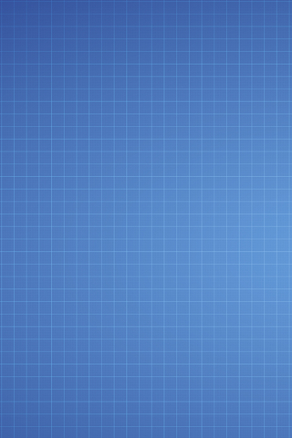
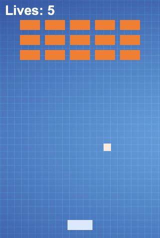
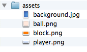

Управление ассетами
В предыдущей главе мы инициализировали Phaser и вывели Canvas на экран. В этой главе мы собираемся загрузить необходимые для игры ассеты.
Прежде чем покажем код для создания игрового состояния Preload, мы должны немного поговорить об ассетах. В наши дни большинство основных создателей игр для успеха своей игры полагаются только на отменную графику. Многих пользователей привлекает такой тип игр, где графика следующего поколения козыряет перед игровой механикой. Построение игры, которая опирается только на такие ассеты это плохой ход, по моему скромному мнению. Также в штат графических и арт-дизайнеров требуется команда особого типа, которой у небольших разработчиков нет.
В центре внимания этой книги является построение двумерных казуальных игр для смартфонов. Обычно игры, которые блистают на мобильном рынке, имеют лучшую механику (или ту, к которой отчасти привыкли) и, как правило, не слишком полагаются на графику, поскольку мобильные телефоны сильно различаются по производительности и мощности.
Если у вас есть отличная идея, вы можете запрограммировать её используя шаблонные рисунки, которые применяются только в процессе разработки, а затем нанять подходящего дизайнера для изготовления реальных ассетов.
Подобно разработчикам настольных игр делающих прототипы из картона и карандашей, так и вы можете задействовать шаблонную графику и звуки используя свободные доступные инструменты. Любая графическая программа будет работать, и не важно, Adobe Photoshop это или Microsoft Paint, пока она может быть использована для создания достаточно хороших ассетов, чтобы продолжить делать игру.
Определение атмосферы
Главным аспектом ассетов, под которыми я подразумеваю графические и звуковые файлы, используемые в игре, является то, насколько они помогают установить игровую атмосферу. Вы можете вдохновиться конфетами и использовать яркие сочетания цветов в глянцевых формах для разработки издания для детей. Или вы можете задать разные оттенки чёрного, красного и коричневого цветов для создания некоторого минималистского жанра ужасов. Механика может быть той же самой и игра будет отличаться только своими ассетами, но Candy Escape действительно другая игра, нежели Zombies: Run For Your Life.
Игровая механика усиливает атмосферу игры, но её визуальные аспекты являются ключом к установлению тона и передачи эмоций игроку. Некоторые механики подходят для одних жанров и не годятся для других. Создание игры одного жанра и использование ассетов из другого жанра будет работать, если вы называете себя инди и даже есть шанс, что это сделает вас миллионером (иными словами, Zombie: Brain Candy Escape вероятно сработает).
Важным шагом является планирование. Когда вы определяете правила игры и проектируете её, нужно подумать, какую атмосферу вы хотите получить и планировать свои ассеты исходя из этого.
Иногда забывают, что частью проектирования ассетов является определение форм-факторов и платформ, на которых будет выпускаться ваша игра.
Проектирование для различных форм-факторов
В центре внимания этой книги является Firefox OS, но я не советую вам ориентироваться исключительно на эту платформу. Классной стороной веба является кросс-платформенность. Игра, которую вы запускаете на Firefox OS, с минимальными настройками может работать на Android, iOS, Facebook, OUYA и др.
Если вы планируете с самого начала выпускать игру для нескольких платформ, то можете готовить свои ассеты по мере необходимости. Когда мы говорим о выпуске веб-материала для нескольких платформ, то обычно подразумеваем разные размеры экрана, пропорции и методы ввода. Оставим пока методы ввода до соответствующей главы и поговорим о разрешении и размерах экрана.
Вы когда-нибудь брали миниатюру фотографии и увеличивали её? Это выглядит довольно плохо, не так ли? Если у вас есть PNG-файл размером 16x16 и вы измените его размер до 2500x1600, то результат не будет выглядеть сглаженным. Гораздо проще иметь файл с большим разрешением и уменьшить его (что означает отбрасывание информации), чем небольшой файл и его увеличить (что означает создание информации или, теоретически, вытягивание кроликов из шляп).
Если вы думаете о выпуске вашей игры на SmartTVs с HD-разрешением, то у вас должны быть ассеты, которые хорошо выглядят в данном разрешении. Вы можете уменьшить их для устройств на Firefox OS по мере необходимости и/или создать более простые ассеты для таких устройств.
Планируя наперёд становится намного легче разрабатывать игру. Если вы начинаете разработку мобильной игры с низким разрешением и потом решаете отправить её на большие экраны, то можете в итоге получить уродливую игру или необходимость переделать ассеты.
По крайней мере, звук воспроизводится одинаково, независимо от размеров экрана...
Анекдот. Пока я разрабатывал Foxnoid, то решил использовать шаблоны, пока не смогу найти дизайнера для создания настоящей графики. В конце концов, я полюбил свои шаблоны настолько, что решил оставить их. Во всяком случае, я могу оставить их только потому, что это игрушка. Я не рекомендую проделывать такое с вашей графикой.
Планирование ассетов нашей игры
Если мы подсчитаем минимальное количество необходимых для игры ассетов, то это будет фон, ракетка, блок и мяч. Этих четырёх рисунков достаточно, чтобы собрать экран и сосредоточиться на игре.
Позже мы добавим больше графики для улучшения нашей игры, но прямо сейчас нам достаточно и этого, чтобы двигаться дальше.
Фон
Вы все знаете, что я не умею рисовать. Поэтому я решил использовать бесплатную доступную графику в качестве шаблона. Mozilla Assets Repository — это коллекция ассетов для помощи людям развивающим Mozilla. Firefox OS имеет некоторые действительно хорошие ассеты, которые, в том числе, включают синий разлинованный фон. Я вырезал часть фона, чтобы использовать в этой игре.

Фон Foxnoid
Блок и ракетка
Блоки это кирпичи, которые располагаются в верхней части экрана, мы используем их в качестве мишени для стрельбы с помощью ракетки и мяча. Чтобы создать наш кирпич я просто выбрал прямоугольник подходящего размера и сделал заливку цветом.
Блок
Учтите, что фоновое изображение это JPEG-файл, поскольку данный формат занимает меньше места. Все остальные ассеты хранятся в PNG, так как этот формат поддерживает прозрачность и тем самым лучше сочетается с фоном.
Если вы думаете об ассетах как о наборе изображений одного поверх другого вы захотите использовать формат, который поддерживает прозрачные участки.
Ракетка
«Мяч»
Наша ракетка создаётся таким же образом, как блок и мяч. Мяч не шарик, а на самом деле квадрат. Я решил использовать квадрат в качестве нашего «мяча», потому что это выглядит более гармонично с нашей графикой и потому что намного проще отслеживать столкновения. Гораздо легче обнаружить столкновение между прямоугольниками, чем между полигонами или шариками.
Как это выглядит в собранном виде
Наша игра выглядит так.

Как выглядит наша игра
Построение игрового состояния Preload
Итак, наши ассеты готовы и мы продолжим создание игрового состояния, которое отвечает за их загрузку в память, так что ассеты будут доступны для других состояний в игре.
Подготовка ассетов
Для хранения всех наших ассетов мы создали папку assets в нашей папке foxnoid. Все графические файлы располагаются там и мы собираемся загрузить их в наш код ниже.

Папка assets
Вы можете взять ассеты из хранилища Github и поместить их в правильное место.
Код preload.js
Игровые состояния представляют собой объекты JavaScript со специальными функциями в них. Эти функции вызываются Phaser в процессе жизненного цикла игрового состояния. Наш прелоадер загружает графические ассеты и после готовности переключается в игровое состояние с именем Game.
Функция preload(), которую Phaser вызывает, когда заинтересован в загрузке ассетов, является функцией объекта игрового состояния. В этой функции мы загружаем наши ассеты. После вызова preload() вызывается функция create(), которая инициализирует игру. Поскольку после загрузки ассетов ничего нет, то Preloader нужен для использования функции create(), чтобы перейти в другое состояние.
Создайте файл с именем preload.js внутри папки js. Добавьте в этот файл следующий код.
preload.js: состояние игры для загрузки наших ассетов
GameStates.Preloader = {
preload: function() {
this.load.image('background', 'assets/background.jpg');
this.load.image('player', 'assets/player.png');
this.load.image('ball', 'assets/ball.png');
this.load.image('block', 'assets/block.png');
},
create: function(){
this.state.start('Game');
}
};Функция preload() загружает нашу графику. Мы используем this.load.image() с двумя параметрами для загрузки каждого изображения:
- ключ, который будет использоваться для ссылки на изображение;
- путь к файлу изображения.
В create() мы просто переключаемся в игровое состояние Game, которое будем компоновать в следующей главе.
Изменение index.html
Теперь мы должны изменить наш файл index.html и включить в него готовый preload.js.
index.html: теперь включает в себя наш прелоадер
<!DOCTYPE html>
<html>
<head>
<meta charset="UTF-8" />
<title>Foxnoid Game</title>
<link rel="stylesheet" href="css/style.css" />
<script defer src="js/phaser.min.js"></script>
<script src="js/init.js"></script>
<script defer src="js/preload.js"></script>
</head>
<body>
<div id="game"></div>
</body>
</html>Изменение init.js
Помните наш файл инициализации? Итак, мы должны изменить его тоже, чтобы зарегистрировать игровое состояние Preloader.
init.js: отвечает за инициализацию Phaser
var GameStates = {}; // <-- Объект для хранения всех наших игровых состояний
document.addEventListener("DOMContentLoaded", function() {
// Портретная ориентация игры
var width = 320;
var height = 480;
var game = new Phaser.Game(width, height, Phaser.CANVAS, "game");
// Добавляем игровое состояние
game.state.add('Preloader', GameStates.Preloader);
// Запускаем состояние Preloader
game.state.start('Preloader');
});Изменения видны в строке 13, где мы используем game.state.add(), чтобы добавить игровое состояние. У функции два параметра:
- ключ, который мы будем использовать для обозначения данного состояния позже;
- объект, содержащий наше состояние.
Затем в строке 16 мы запускаем состояние Preloader. Чтобы узнать больше о болтах и гайках игровых состояний обратитесь к документации Phaser.State.
Мы переместились на один шаг ближе к завершению игры.
Резюме
В этой главе мы узнали немного больше об ассетах и как они влияют на атмосферу нашей игре и опыт игрока. Мы переместились к созданию простых графических ассетов и загрузили их в игровом состоянии Preload.
В следующей главе мы собираемся построить игровой цикл и наконец заставить мяч немного попрыгать на экране.

Все материалы сайта доступны по лицензии Creative Commons «Attribution-NonCommercial» («Атрибуция — Некоммерческое использование») 4.0 Всемирная, если не указано иное.